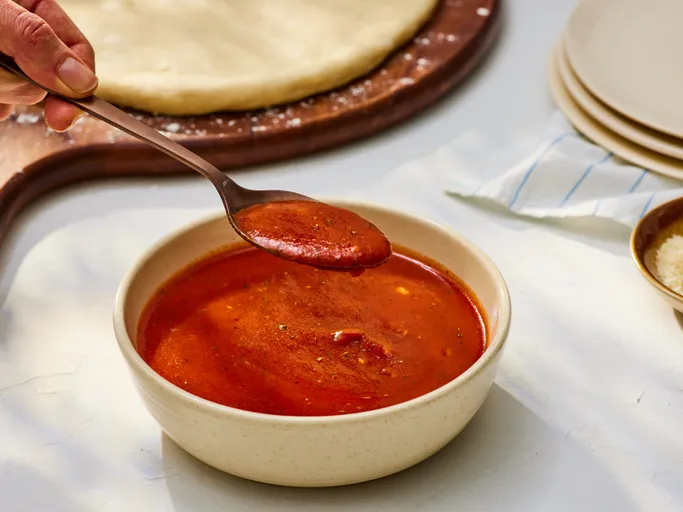

Pizza Sauce Recipe

Ingredients
- 1 cup water, or as needed
- 1 (6-ounce) can tomato paste
- ⅓ cup extra-virgin olive oil
- 2 cloves garlic, minced
- ½ tablespoon dried oregano
- ½ tablespoon dried basil
- ½ teaspoon dried rosemary, crushed
- ¼ teaspoon salt, or to taste
- ¼ teaspoon ground black pepper, or to taste
Steps
- Gather the ingredients.
- Mix together water, tomato paste, and olive oil in a large bowl or jar. Add garlic, oregano, basil, rosemary, salt, and pepper; mix well.
- For best results, let sauce stand for several hours to allow the flavors to blend. No cooking is necessary; just spread on pizza crust.
Home